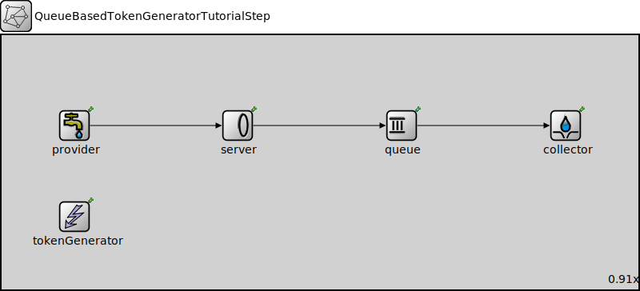

Package: inet.tutorials.queueing
QueueBasedTokenGeneratorTutorialStep
network(no description)
Usage diagram
The following diagram shows usage relationships between types. Unresolved types are missing from the diagram.
Properties
| Name | Value | Description |
|---|---|---|
| isNetwork | ||
| display | bgb=875,350 |
Unassigned submodule parameters
| Name | Type | Default value | Description |
|---|---|---|---|
| provider.displayStringTextFormat | string | "created %p pk (%l)" |
determines the text that is written on top of the submodule |
| provider.packetNameFormat | string | "%a-%c" |
see directives in module documentation |
| provider.packetRepresentation | string | "byteCount" |
determines the chunk of the packet data |
| provider.packetProtocol | string | "unknown" | |
| provider.packetLength | int | ||
| provider.packetData | int | -1 | |
| provider.attachCreationTimeTag | bool | true | |
| provider.attachIdentityTag | bool | true | |
| provider.attachDirectionTag | bool | true | |
| provider.clockModule | string | "" |
relative path of a module that implements IClock(1,2); optional |
| provider.initialProvidingOffset | double | 0s |
initial duration before which packets are not provided |
| provider.providingInterval | double | 0s |
elapsed time between subsequent packets allowed to be pulled by the connected packet collector, 0 means any number of packets can be pulled at the same simulation time |
| provider.scheduleForAbsoluteTime | bool | true |
when a clock is used relative means that setting the clock will not affect the simulation time of the event |
| server.displayStringTextFormat | string | "contains %n tk\nserved %p pk (%l)" |
determines the text that is written on top of the submodule |
| server.initialNumTokens | double | 0 |
initial number of tokens |
| server.maxNumTokens | double | nan |
maximum number of tokens |
| server.tokenConsumptionPerPacket | double | 1 |
how many tokens are consumed per processed packet |
| server.tokenConsumptionPerBit | double | 0 |
how many tokens are consumed per processed bit |
| queue.displayStringTextFormat | string | "contains %p pk (%l) pushed %u\npulled %o removed %r dropped %d" |
determines the text that is written on top of the submodule |
| queue.packetCapacity | int | -1 |
maximum number of packets in the queue, no limit by default |
| queue.dataCapacity | int | -1b |
maximum total length of packets in the queue, no limit by default |
| queue.dropperClass | string | "" |
determines which packets are dropped when the queue is overloaded, packets are not dropped by default; the parameter must be the name of a C++ class which implements the IPacketDropperFunction C++ interface and is registered via Register_Class |
| queue.comparatorClass | string | "" |
determines the order of packets in the queue, insertion order by default; the parameter must be the name of a C++ class which implements the IPacketComparatorFunction C++ interface and is registered via Register_Class |
| queue.bufferModule | string | "" |
relative module path to the IPacketBuffer module used by this queue, implicit buffer by default |
| collector.displayStringTextFormat | string | "received %p pk (%l)" |
determines the text that is written on top of the submodule |
| collector.clockModule | string | "" |
relative path of a module that implements IClock(1,2); optional |
| collector.initialCollectionOffset | double | -1s |
initial duration before which packets are not collected, negative value means: try the first collection in initialize() |
| collector.collectionInterval | double |
elapsed time between subsequent packets pulled from the connected packet provider |
|
| collector.scheduleForAbsoluteTime | bool | true |
when a clock is used relative means that setting the clock will not affect the simulation time of the event |
| tokenGenerator.displayStringTextFormat | string | "generated %t tk\nto %s" |
determines the text that is written on top of the submodule |
| tokenGenerator.minNumPackets | int | 1 | |
| tokenGenerator.minTotalLength | int | 0 b | |
| tokenGenerator.numTokens | double | 1 |
number of tokens generated when the queue becomes empty |
Source code
network QueueBasedTokenGeneratorTutorialStep { @display("bgb=875,350"); submodules: provider: PassivePacketSource { @display("p=100,125"); } server: TokenBasedServer { @display("p=325,125"); } queue: PacketQueue { @display("p=550,125"); } collector: ActivePacketSink { @display("p=775,125"); } tokenGenerator: QueueBasedTokenGenerator { @display("p=100,250"); storageModule = "^.server"; queueModule = "^.queue"; } connections allowunconnected: provider.out --> server.in; server.out --> queue.in; queue.out --> collector.in; } //-------------------------------------------------File: tutorials/queueing/QueueingTutorial.ned
 This documentation is released under the Creative Commons license
This documentation is released under the Creative Commons license